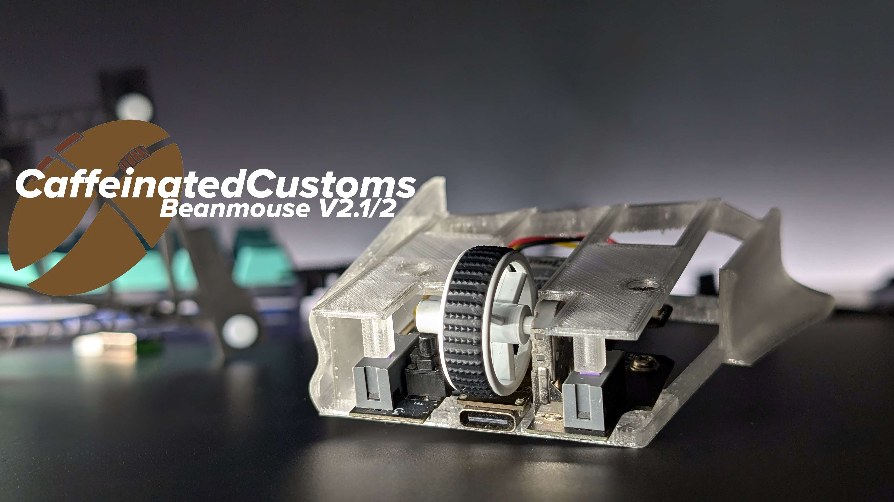
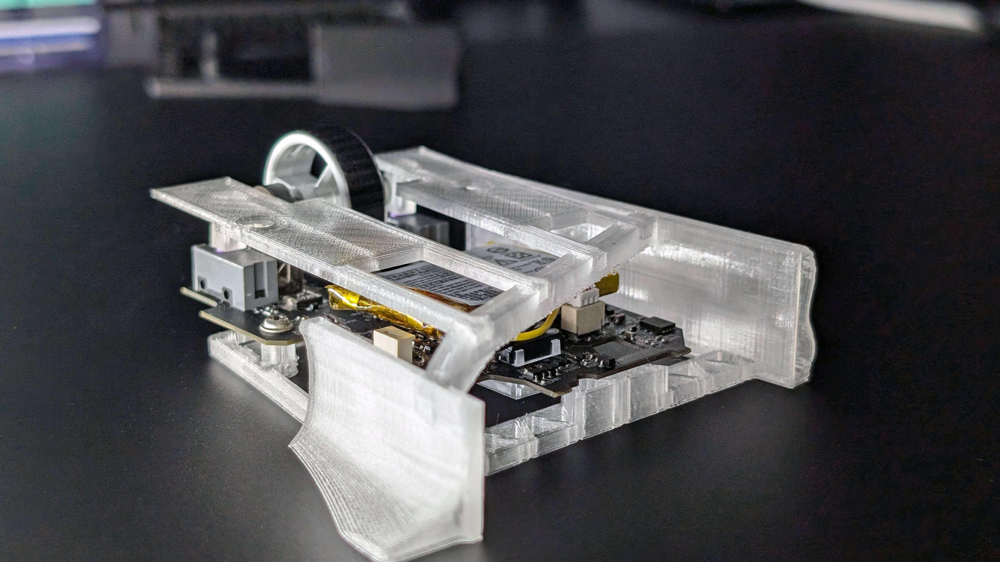
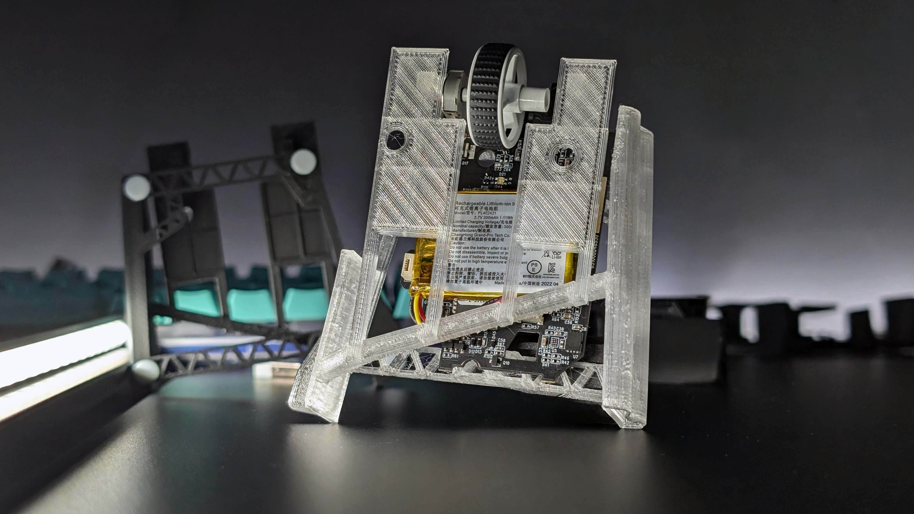

BeanMouse Small V2.1
A Fingertip Grip Contender for the Viper V2 Pro.
01. Overview
The BeanMouse V2.½.2 is a completely custom designed fingertip grip style shell made to work with the Razer Viper V2 Pro internals. Coming in at 40 AUD, it's by far one of the most cost-effective shells you can get for the VV2P. It's a shell made to be comfortable for a wider range of people, whether you have larger or smaller hands, or even if you are left-handed.

02. Performance
Performance, not much to say. It's a Razer Viper V2 Pro. It has a great implementation of a 3950 sensor with Razer's own custom branded Raesha optical switches. The sensor position on the BeanMouse puts it in line with your thumb, making for a responsive experience. Although a further forward sensor would make this better, that's simply not possible since it's a PCB made for a different mouse.
03. Shape & Design Breakdown
Thumb Groove / Rest
The thumb groove, to put it simply, is one of the shape's best features. With the comfort groove at the top of the thumb groove, it makes for an excellent experience and allows for a much more natural grip style, much more relaxed compared to other shells. The small variant of the BeanMouse I have been testing could benefit largely from a slightly larger thumb groove, especially towards the front of the groove. Using the small with larger hands like mine means that my thumb does go over the rest and sometimes drags on the pad; a simple extension of the bottom part would go a long way, with this being a non-issue on the large.

Click Design
At first, the click design was more of an issue to me than it is now. However, after using it for a week or so, it's easily one of the better/best out there, especially on this shape of mouse. The main comparison being Optimum Tech's ZeroMouse. The click design on the BeanMouse has 0 pre or post-travel which, in my opinion, makes for one of the nicest optical implementations on accident.
Right Wall / Finger Support
The right wall/support is great since it doesn't have designated grip points but instead opts for a universal solution. This part is angled outwards to the mouse and lets you get a firmer grip on the shell. The comfort grooves give a great resting place for the ring and pinky; however, with my grip style, I had an issue with the rear end being too flared out / too long and it digging into my lower pinky.
General Design & Build
Honestly, not much to say here apart from its structurally sound and I had zero build issues on both the small and the revised large (when printed correctly).

Final Thoughts & Value
For 40 USD, this is incredible value, especially with the competition on the market. I'm excited to see where D takes this shape and any new mice he may cook up. This is a great shape for anyone looking to try a dedicated fingertip mouse, and with how cheap Viper V2 Pros can be on eBay, you can easily have yourself the best fingertip mouse under 70 USD.